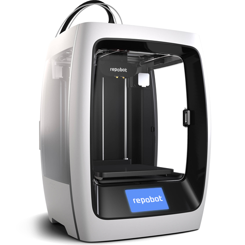

Om RepoBot
RepoBot är den senaste generation av 3D skrivare, från skaparna av sculptBot, TazerScanner och 5D skrivare. RepoBot är den perfekta 3D skrivaren för varje hushåll att behålla, och får chansen att mata in vad som helst i den. Utan att kunna veta mycket om tekniskt underhåll.
Skapa vad du vill från ätbara hamburgare, Lego-modeller,
köksinredning, böcker och t.om. desserter. Allt du behöver är de
nödvändiga material och Repobot tillverkar det du vill.
Ladda ner färdiga mallar som du kan utgå från för att framställa.
RepoBot kommer också ihåg inställingar som du har sparat och du kan
producera ett flerat artiklar som mycket du vill. Aldrig behöver du gå
till mataffären för att handla mjölk eller köpa glödlampor.
Om du själv skapar 3D modeller kan du använda RepoBot för att framställa det du vill.
Du behöver själv inte separera olika rörliga delar själv, utan RepoBot kan montera
beståndsdelarna själv, som en robot eller lekaksbil.